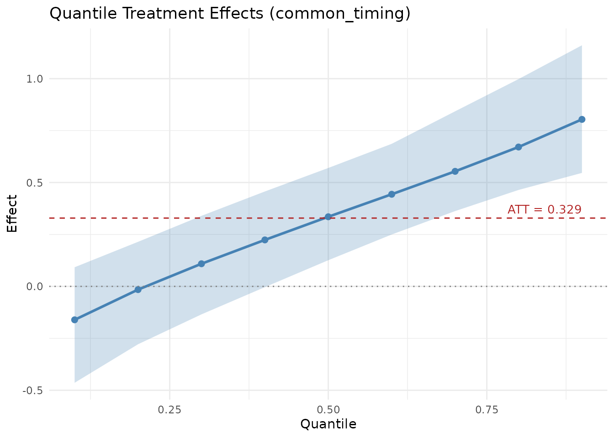
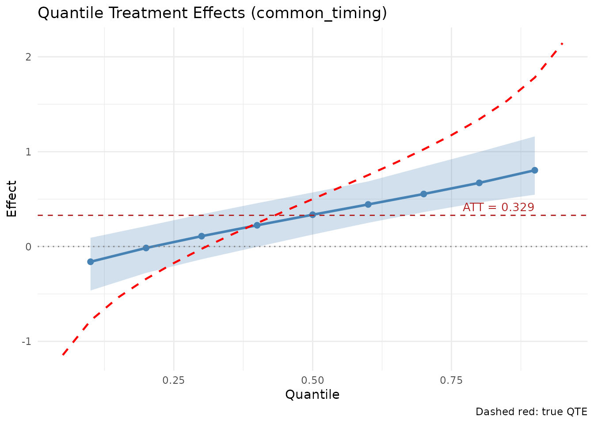

Both endid and lwdidR implement the panel
Difference-in-Differences (DiD) approach proposed by Lee &
Wooldridge (2025). The core idea is to perform unit-specific
pre-treatment transformations (like demeaning or detrending) and then
collapse the panel into a cross-section for estimation.
Key Differences
| Feature | lwdidR |
endid |
|---|---|---|
| Estimation | Ordinary Least Squares (OLS) | Engression (Neural Network) |
| Main Target | Average Treatment Effect (ATT) | ATT and Distributional Effects (QTE) |
| Inference | Analytical SEs, Wild Bootstrap, Permutation | Non-parametric Unit Bootstrap |
| Non-linearity | Linear only | Handles complex non-linearities |
A Simulation Comparison
We’ll simulate a panel where the treatment has a location-scale effect: it shifts both the mean and the spread of the outcome distribution. This creates quantile treatment effects (QTEs) that vary across the distribution — small or even negative at lower quantiles, and large at upper quantiles.
The true QTE at quantile is: where is the location shift, and , so . This ranges from about at to at .
library(lwdidR)
library(endid)
#>
#> Attaching package: 'endid'
#> The following object is masked from 'package:lwdidR':
#>
#> apply_transform
set.seed(42)
# Generate synthetic panel data with location-scale treatment effect
N <- 200
T_total <- 6
tpost1 <- 4
unit <- rep(1:N, each = T_total)
time <- rep(1:T_total, times = N)
alpha <- rep(rnorm(N, sd = 0.3), each = T_total) # Unit fixed effects
# Group 1: treated, Group 0: control
group <- rep(c(1, 0), each = N/2 * T_total)
post <- as.integer(time >= tpost1)
D <- post * (group == 1)
# Location-scale DGP: treatment shifts mean by 0.5 and increases SD from 0.5 to 1.5
epsilon <- rnorm(N * T_total)
y <- alpha + 0.5 * D + (0.5 + 1.0 * D) * epsilon
df <- data.frame(unit = unit, time = time, y = y,
post_treat = D, group = group)1. Estimating with lwdidR (OLS)
lwdidR estimates the Average Treatment Effect using
OLS.
# Using 'post_treat' as the treatment receipt indicator
fit_lwdid <- lwdid(df, y = "y", ivar = "unit", tvar = "time", post = "post_treat",
vce = "hc3")
summary(fit_lwdid)
#>
#> Lee-Wooldridge DiD (lwdidR)
#> Design: common_timing
#> Transf.: demean
#> VCE: HC3
#> --------------------------------------------------
#> ATT: 0.3559
#> SE: 0.0972
#> t-stat: 3.6598
#> p-value: 0.0003
#> 95% CI: [0.1641, 0.5477]
#> N (firstpost): 200
#>
#>
#> Period-specific effects:
#> tindex att se tstat pvalue
#> 4 0.4487 0.1642 2.733 0.006845
#> 5 0.3278 0.1642 1.997 0.047194
#> 6 0.2912 0.1601 1.819 0.0704142. Estimating with endid (Engression)
endid uses engression to capture the
distributional nature of the effect.
# We use fewer epochs and bootstrap draws for speed in this vignette
# For endid, 'post' is a calendar indicator, 'dvar' is the group indicator
fit_endid <- endid(df, y = "y", ivar = "unit", tvar = "time",
post = "post_treat", dvar = "group",
num_epochs = 500, nboot = 20, silent = TRUE)
summary(fit_endid)
#> Engression-Based Distributional DiD
#> Design: common_timing | Transformation: demean
#>
#> --- ATT ---
#> Estimate SE CI_Lower CI_Upper
#> 0.3287913 0.1187768 0.1370315 0.5529484
#>
#> --- QTE ---
#> quantile effect se ci_lower ci_upper
#> 0.1 -0.1608453 0.1629803 -0.463837016 0.09222215
#> 0.2 -0.0154868 0.1447135 -0.278476569 0.21458413
#> 0.3 0.1089925 0.1320758 -0.134654291 0.33962879
#> 0.4 0.2237623 0.1247939 -0.003577585 0.45690563
#> 0.5 0.3351900 0.1234901 0.126001726 0.57011401
#> 0.6 0.4434574 0.1271108 0.249755643 0.68627059
#> 0.7 0.5538159 0.1358760 0.362520146 0.84279969
#> 0.8 0.6708883 0.1500234 0.464175446 0.99783601
#> 0.9 0.8039002 0.1690881 0.546221603 1.16063045Visualizing Quantile Treatment Effects
While lwdidR provides a single ATT (around 0.5, the true
location shift), endid reveals the full picture: the
treatment hurts at low quantiles (by increasing downside risk)
and helps substantially at high quantiles (by increasing
upside). The QTE plot should show an upward-sloping curve crossing the
ATT line.

Adding the True QTE
We can overlay the analytical QTE to verify that endid
recovers the true distributional effect.
# True QTE: 0.5 + qnorm(tau)
taus <- seq(0.05, 0.95, by = 0.05)
true_qte <- data.frame(tau = taus, qte = 0.5 + qnorm(taus))
plot(fit_endid) +
geom_line(data = true_qte, aes(x = tau, y = qte),
linetype = "dashed", color = "red", linewidth = 0.8) +
labs(caption = "Dashed red: true QTE")

When to use which?
-
Use
lwdidRwhen you want a fast, industry-standard linear DiD estimate with well-understood frequentist properties and high-performance standard errors (like Wild Cluster Bootstrap). -
Use
endidwhen you suspect the treatment effect might be non-linear, vary across the distribution, or if you want to estimate Quantile Treatment Effects (QTE). In this example,lwdidRcorrectly estimates the ATT of 0.5, but completely misses that the treatment increases inequality — a conclusion only visible through the distributional lens ofendid.